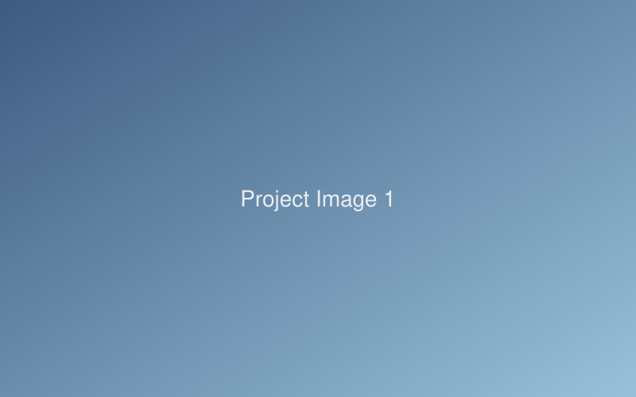
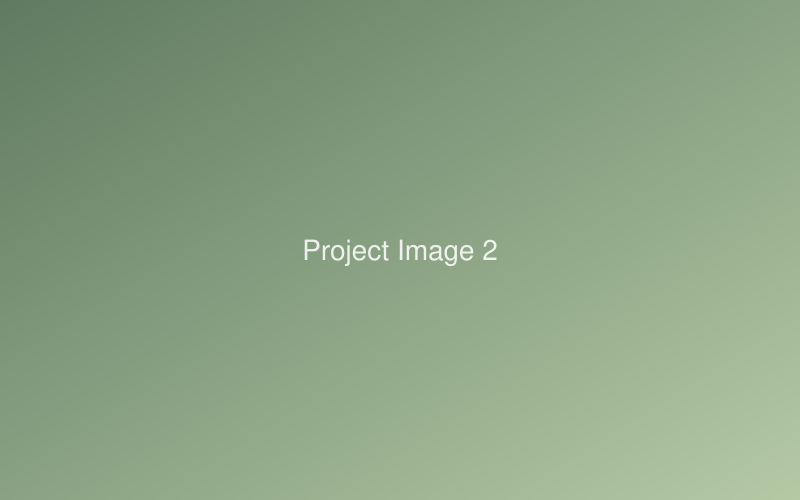
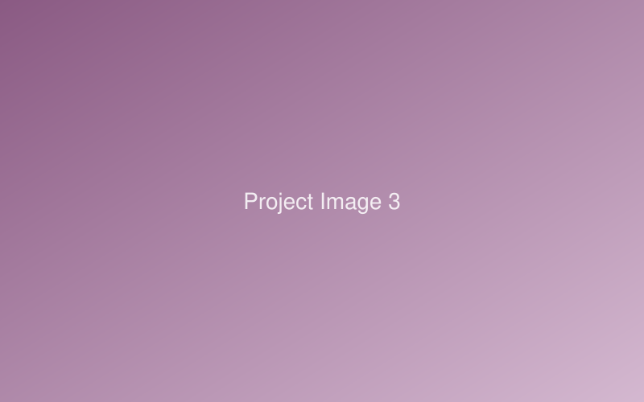

Project Title One
One-sentence summary of the project — what it is and why it matters.

Caption describing the image (optional — delete if not needed).
Overview
2–3 sentences: the context and the problem. Who was affected, why existing solutions fell short, and what you set out to do.
Process
What you actually did: research methods (interviews, surveys, field observation), design iterations, prototyping, testing. Focus on decisions you made and why.


Outcome
The result: what you delivered, what changed, what you measured or learned. If there were numbers (participants, adoption, improvement), put them here.
Reflection
1–2 sentences on what you'd do differently or what this project taught you. Graduate admissions readers love this section — keep it honest and specific.
← Back to all projects